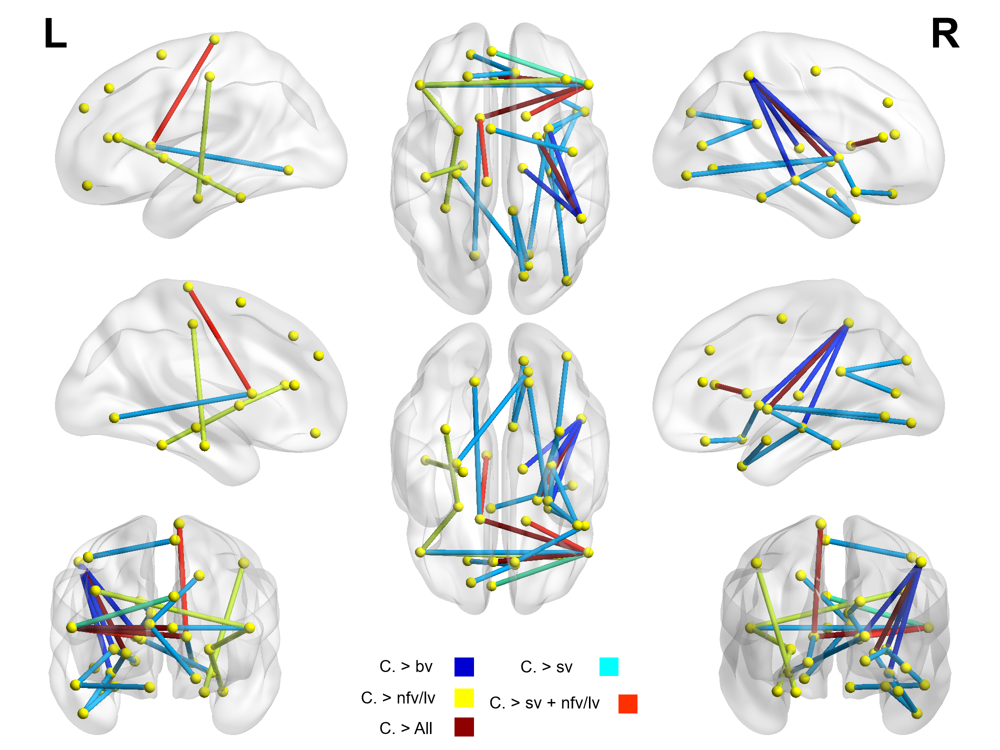

El atlas AAL se encuentra basado en una división cortical de 90 regiones. La división de 90 regiones obedecen a una segmentacion clásica de neuroanatomía.

El atlas MindBoggle se encuentra basado en una división cortical de 94 regiones provistas por Desikan–Killiany–Tourville que es usado dentro de Freesurfer, sin embargo, se establece que las parcelaciones provenientes de este atlas son el resultado del etiquetado maual de 101 cerebros en T1, posteriormente fueron normalizados y se produjo este atlas.
El atlas de Brodmann corresponde a la clasificación citoarquitectónica realizada por el profesor Brodmann de 1909. El atlas usado aqui pertenece al provisto por MRIcron. Para una discusión con mayor profundidad sobre las alcances y dificultades del Atlas de Brodmann consultar la siguiente Página web
El atlas Brainnetome es la parcelacion más reciente basada en regiones de conectividad funcional y que cuenta con 246 regiones. Página web
El atlas AICHA (Atlas of Intrinsic Connectivity of Homotopic Areas) es una parcelación basada en datos de resonancia funcional en reposo de 281 individuos, esta contituido por dos aspectos para cada región, homogeneirdad, y homotopía. El número de regiones es de 383. Página web
El atlas Juelich es una parcelación basada aspectos citoarquitectónicos, para lo cual se basaron en un amplio numero de tajadas de cerebro con el fin de reconstruir divisiones segun la forma de poblaciones neuronales. El número de regiones es de 119. . Página web
El atlas DMN o Defaul Mode Network es una parcelación basada en las 7 principales regiones a partir de resonancia funcional en reposo. Para este trabajo se tomó en cuenta la propuesta de Smith y Miller de 1992. Página web
El atlas de Shen X se encuentra basado en una parcelación desde resonancia magnetica funcional en reposoPágina web